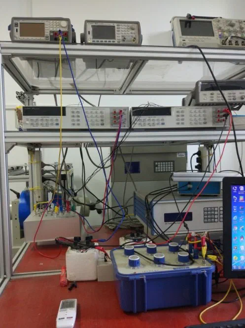
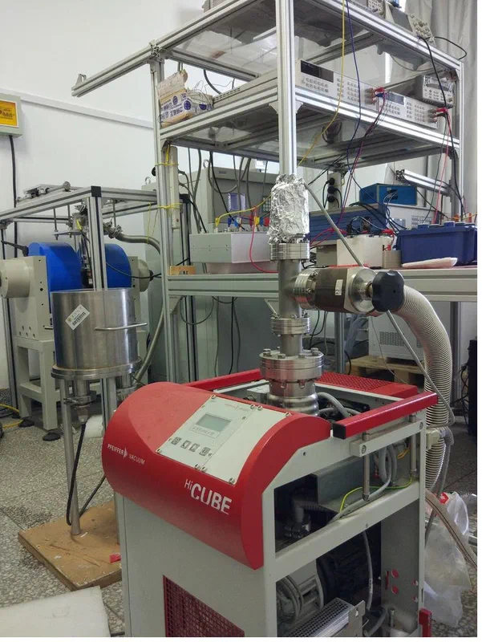
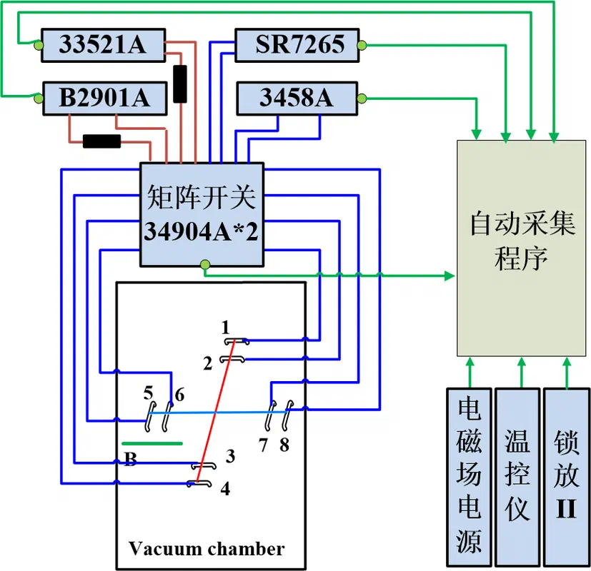

Facilities
Scanning Thermal Microscopy System


Purpose: Nanofabrication and nanomanipulation, as well as measurement of surface topography, nanoscale temperature, and local thermomechanical properties of materials
Specifications: Repeatability of 3 nm in the z direction and 50 nm in the x and y directions; travel range of 10 mm × 10 mm
Temperature range: Room temperature to 300 °C
Lock-in Infrared Thermography System


Purpose: Measurement of three-dimensional anisotropic thermophysical properties of various free-standing thin films, and measurement of thermal contact resistance
Specifications: Cross-plane and in-plane thermal diffusivity range of 10⁻⁸ m²/s to 10⁻³ m²/s
Temperature range: 80–500 K
Thickness range: From the micrometer scale to 4000 μm
Thermoelectric Property Measurement System for Micro/Nano Wires
  


Purpose: Measurement of thermoelectric properties of various fiber samples
Sample requirements: Diameter above 2 μm and length of approximately 5–20 mm; a cross-sectional morphology image of the sample (elliptical, flat, circular, etc.) should be provided for subsequent data processing
Temperature range: 80–320 K; the system can be extended up to 500 K (the extension module has not yet been purchased)
Thermal conductivity range: Thermal resistance per unit length of 10⁷–10¹¹ K·W⁻¹, corresponding to a thermal conductivity above 0.1 W/(m·K), preferably below 500 W/(m·K)
Sample conductivity: No requirement on electrical conductivity
Other Equipment
Hall Effect Measurement System


Purpose: Measurement of carrier concentration and mobility of thin films
Specifications: Central magnetic field of 2 T; temperature range of 80–500 K
Images and specifications for the following equipment are to be added- Infrared thermal camera
- Probe station
- Film thickness gauge
- Data logger